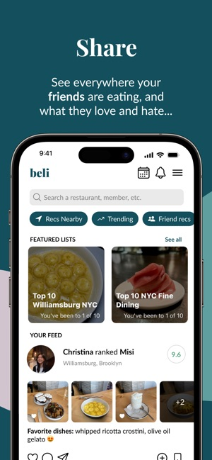

About Me
Hello! My name is Erica and I love exploring different cuisines and flavors across the world. Even beyond the food itself, I love the social aspect of sharing a meal with my friends and family whether that's staying in and cooking or going out to try new restaurants
While I was on my first co-op, some of the full-time analysts introduced me to a new app called Beli, a restaurant ranking and recommendation app for rating and discovering the best dining spots but also acts as a form of social media between friends. I really enjoy getting to log and see an overview of all the restaurants I've been to and how my rankings compare against my friends'.
On this website, I will detail the reviews on some of my favorite restaurants that I've been to!
